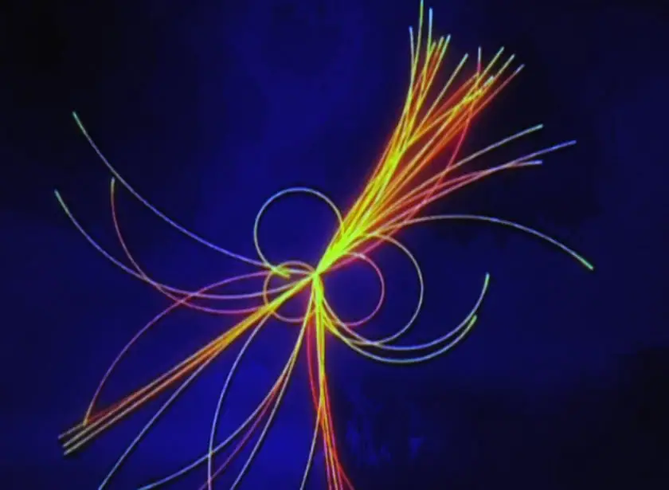

Articles ·
Where Are All the ‘Sparticles’ That Could Explain What’s Wrong with the Universe?

livescience.com
By Paul Sutter, Astrophysicist | March 1, 2019 07:52am ET
The governing theory of particle physics explains everything about the subatomic world … except for the parts that it doesn’t. And unfortunately, there aren’t a lot of flattering adjectives that can be applied to the so-called Standard Model. Built up bit by bit over the course of decades, this theory of fundamental physics is best described as ungainly, hodgepodge and MacGyver-ed together with pieces of string and chewing gum.
Still, it’s an incredibly powerful model that accurately predicts a tremendous variety of interactions and processes.
But it does have some glaring shortcomings: It doesn’t incorporate gravity; it can’t explain the masses of various particles, some of which bestow force; it doesn’t have an explanation for certain neutrino behavior; and it straight-up doesn’t have an answer for the existence of dark matter.
So, we gotta figure something out. We need to go beyond the Standard Model to better understand our universe.
Unfortunately, many of the leading contenders to explain this great beyond — called supersymmetric theories — have been ruled out or severely limited in recent years. There’s still a Hail Mary concept that could explain the mysterious parts of the universe not covered by the Standard Model, however: Long-lived supersymmetric particles, sometimes called sparticles for short. But depressingly, a recent search for these oddball particles has come back empty-handed. [The 11 Biggest Unanswered Questions About Dark Matter]
Not-so-super symmetry
By far the trendiest set of theories that push past the bounds of the current Standard Model are grouped together into a class of ideas known as supersymmetry. In these models, the two major camps of particles in nature (“bosons,” such as the familiar photons; and “fermions” — like electrons, quarks and neutrinos) actually have a strange sort of sibling relationship. Every single boson has a partner in the fermion world, and, likewise, every fermion has a boson friend to call its own.
None of these partners (or more appropriately in the confusing jargon of particle physics — “superpartners”) are among the normal family of known particles. Instead, they are typically much, much heavier, stranger and generally weirder-looking.
This difference in mass between the known particles and their superpartners is the result of something called symmetry-breaking. This means that at high energies (like the insides of particle accelerators), the mathematical relationships between particles and their partners are on an even keel, leading to equal masses. At low energies (like the energy levels you experience in normal, everyday life), however, this symmetry is broken, sending the partner particle masses skyrocketing. This mechanism is important, because it also happens to potentially explain why, for example, gravity is so much weaker than the other forces. The math is just a tiny bit complicated, but the short version is this: Something broke in the universe, causing the normal particles to become drastically less massive than their superpartners. That same breaking action may have punished gravity, diminishing its strength relative to the other forces. Nifty. [6 Weird Facts About Gravity]
Live long and prosper
To hunt for supersymmetry, a bunch of physicists chipped in and built the atom smasher called the Large Hadron Collider, which after years of arduous searching came to the surprising but disappointing conclusion that almost all supersymmetry models were wrong.
Whoops.
Simply put, we can’t find any partner particles. Zero. Zilch. Nada. No hints of supersymmetry have appeared in the world’s most powerful collider, where particles are zipped around a circular contraption at near light-speed before colliding with each other, which sometimes results in the production of exotic new particles. It doesn’t necessarily mean that supersymmetry is wrong, per se, but all the simplest models have now been ruled out. Is it time to abandon supersymmetry? Maybe, but there might be a Hail Mary: long-lived particles.
Usually, in the land of particle physics, the more massive you are, the more unstable you are and the faster you’ll decay into simpler, lighter particles. It’s just the way things are. Since the partner particles are all expected to be heavy (otherwise, we would’ve seen them by now), we expected they would decay quickly into showers of other things we might recognize, and then we would’ve built our detectors accordingly.
But what if the partner particles were long-lived? What if, through some quirk of exotic physics (give theorists a few hours to think about it, and they’ll come up with more than enough quirks to make it happen), these particles manage to escape the confines of our detectors before dutifully decaying into something less strange? In this scenario, our searches would’ve come up completely empty, simply because we weren’t looking far enough away. Also, our detectors are not designed to be able to look directly for these long-lived particles.
ATLAS to the rescue
In a recent paper published online Feb. 8 on the preprint server arXiv, members of the ATLAS (somewhat awkward shorthand for A Toroidal LHC ApparatuS) collaboration at the Large Hadron Collider reported an investigation into such long-lived particles. With the current experimental setup, they couldn’t search for every possible long-lived particle, but they were able to search for neutral particles with masses between 5 and 400 times that of the proton.
The ATLAS team searched for the long-lived particles not in the center of the detector, but at its edges, which would’ve allowed the particles to travel anywhere from a few centimeters up to a few meters. That may not seem very far in terms of human standards, but for massive, fundamental particles, it might as well be the edge of the known universe.
Of course, this isn’t the first search for long-lived particles, but it is the most comprehensive, using almost the full weight of loads of experimental records at the Large Hadron Collider.
And the big result: Nothing. Zero. Zilch. Nada.
Not a single sign of any long-lived particles.
Does this mean that idea is dead, too? Not quite — these instruments weren’t really designed to go hunting for these kinds of wild beasts, and we’re only scraping by with what we have. It may take another generation of experiments specifically designed to trap long-lived particles before we actually catch one.
Or, more depressingly, they don’t exist. And that would mean that these creatures — along with their supersymmetric partners — are really just ghosts dreamt up by feverish physicists, and what we actually need is a whole new framework for solving some of the outstanding problems of modern physics.
Migrated from the AUASS website archive as published, with the formatting tidied.